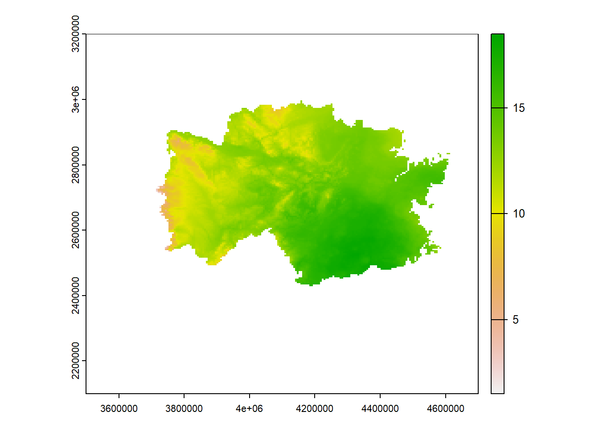
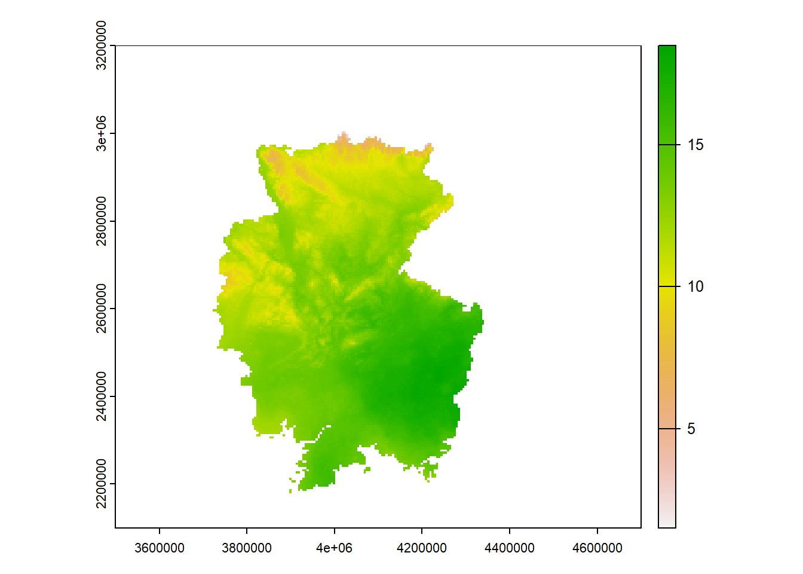
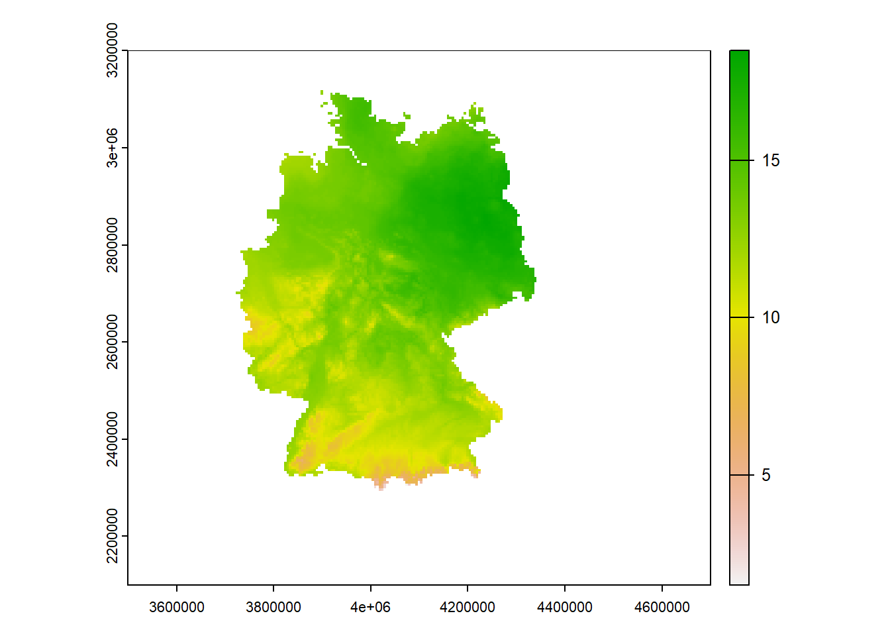

library(terra)
library(ncdf4)
library(purrr)When working with raster data, one thing I’ve noticed is: there’s a lot of obscure data formats. And with every one of them, it takes me a while to figure out how to handle them in R. So I decided to make a series of blog posts on how to handle some of the raster formats I’ve come across.
The first one are .nc files, also known as netCDF. From what I’ve learned, they usually have three layers:
- latitude
- longitude
- time
However, the order of these three layers varies, which means you’ll have to get acquainted with your data first. So:
- Get to know dataset with
ncdf4 - Read in data with
terra::rast()
Further info
This blog post is based in parts on R as GIS for Economists and an RPubs article on ncdf4.
Setup
First, we load the necessary libraries.
Then, we prepare the data. I’m taking data from the German Weather Service (DWD) for the mean temperature in 2019.
# create temporary path and download the raster data
raster_path <- tempfile(fileext = ".nc")
download.file(
url = "https://opendata.dwd.de/climate_environment/CDC/grids_germany/daily/hyras_de/air_temperature_mean/tas_hyras_5_2019_v5-0_de.nc",
destfile = raster_path,
# it's a binary file
mode = "wb")I want to know what the weather was like on the day after the last episode of Game of Thrones aired – May 20, 2019. Why the day after? Because it was usually released in American time, so one could only stream it the day after. My assumption would be that if the weather was not great, people were more likely to watch the final episode right away.
Let’s just figure out what day of the year May 20, 2019 was:
day_of_year <- strftime("20-05-2019", format = "%j") |> as.integer()
day_of_year[1] 141Checking out the structure and loading the data
Let’s nc_open this file now to check out it’s structure.
Open nc file
The first thing we do is have a look at the variable names (they’re saved under var in the weather list). Let’s also check out their names, which is saved under longname in this ncd4 format. Additionally, let’s find out their respective dimensions, saved under size.
raster <- raster_path |> nc_open()
raster |>
pluck("var") |>
map_df(~ .x[c("longname", "size")] |> as.character()) |>
# you could stop here, but I wanted a nice display
t() |>
data.frame() |>
tibble::rownames_to_column() |>
setNames(c("variable", "name", "dimension")) |>
kableExtra::kbl()| variable | name | dimension |
|---|---|---|
| time_bnds | time_bnds | c(2, 365) |
| lon | Longitude Of Cell Center | c(240, 220) |
| lat | Latitude Of Cell Center | c(240, 220) |
| x_bnds | x_bnds | c(2, 240) |
| y_bnds | y_bnds | c(2, 220) |
| crs_HYRAS | DWD HYRAS ETRS89 LCC grid with 240 columns and 220 rows | 1 |
| tas | Daily Mean Air Temperature | c(240, 220, 365) |
| number_of_stations | Number Of Stations Available For Interpolation Per Day All Over The HYRAS Area | 365 |
Time and spatial layers
We’re definitely going to need something along the lines of latitude and longitude. From the descriptions, we can see that lat and lon describe the cell center, and their dimension is 240 \(\times\) 220. That is not what we need. Instead, we want something with dimensions of 1–2 \(\times\) 240 or 220, which describes the latitude and longitude in general, not for every cell center. In this case, that applies for x_bnds and y_bnds.
We also need something specifying the time. In this case, that is time_bnds.
Let’s also get the crs for good measure, crs_HYRAS. This only has dimension 1, so we need to extract is as an attribute.
All of these layers can be named differently in different files, so it pays off to check out the specific name. Let’s save them into variables so we can’t forget them!
time <- ncvar_get(raster, "time_bnds")
lon <- ncvar_get(raster, "x_bnds")
lat <- ncvar_get(raster, "y_bnds")
crs <- ncatt_get(raster, "crs_HYRAS")$epsg_codeVariable layer
Now, we also need the actual variable we’re looking for. In this case, it’s tas (for mean daily temperature). We can see that the dimensions are the largest and match our geospatial and time dimensions: 240 (x_bnds) \(\times\) 220 (y_bnds) \(\times\) 365 (time_bnds).
Let’s get this variable’s array out. Additionally, let’s find out how the NAs are coded, and use that information to code them as NAs that R recognizes.
variable_array <- ncvar_get(raster, "tas")
fillvalue <- ncatt_get(raster, "tas", "_FillValue")
# set NA value
variable_array[variable_array == fillvalue$value] <- NAClose nc file
Now we have all the information we need, yay! Let’s not forget to close the .nc file again.
nc_close(raster)Extracting the layer with ncdf4
Now for the fun part! Let’s get out the day that we want – 141. We first do this with ncdf4 and the information we already gathered. We could, however, also do this with terra.
Making a raster
Next, we make a raster of this with the terra package. We already know the structure of the array, where time is the last layer. This does vary over different files though!
We declare the extent and the crs that we extracted in Section 2.2. Then, let’s go ahead and plot it!
got_weather_array <- variable_array[,, day_of_year]
got_weather_raster <- got_weather_array |>
terra::rast(extent = ext(min(lon),
max(lon),
min(lat),
max(lat)),
crs = crs)
plot(got_weather_raster)
Well, this somewhat looks like Germany … but not quite yet. We need to mirror it and turn it by 90°.
Transposing the raster
For this, we need to go back to the last step, and transpose the 2-dimensional array for our specific day. Then, we make it a raster again.
got_weather_raster_transposed <- got_weather_array |>
t() |>
terra::rast(extent = ext(min(lon),
max(lon),
min(lat),
max(lat)),
crs = crs)
got_weather_raster_transposed |>
plot()
Well, this is almost right – we just need to turn it upside down now.
Flipping the raster
For this task, terra has a specific function, flip. We can say which way to flip the raster – in this case, vertically. Let’s go ahead and plot this again.
got_weather_raster_right_side_up <- got_weather_raster_transposed |>
flip(direction = "vertical")
got_weather_raster_right_side_up |> plot()
And there we have it!
Taking the shortcut with terra
An alternative way of reading .nc data into a raster is using terra::rast() directly.
raster_terra <- rast(raster_path,
drivers = "NETCDF")In this case, the layer structure is rather easy: We simply have 365 layers for tas.
raster_terra |>
names() |>
data.frame(layer_name = _) |>
tidyr::separate_wider_delim(layer_name,
names = c("variable", "day"),
delim = "_") |>
DT::datatable(options = list(pageLength = 5))In such an easy case, we can extract the layer for our day_of_year as follows:
raster_terra[[day_of_year]] |> plot()
And there we have it – we extracted the weather on the day after the last episode of Game of Thrones aired! In the South, weather was a lot colder, so maybe more people watched the last episode there.
Citation
BibTeX citation:
@online{zeller2024,
author = {Zeller, Sarah},
title = {Opening `.nc` Files},
date = {2024-02-24},
url = {https://sarahzeller.github.io/blog/posts/opening-nc-files/},
langid = {en}
}
For attribution, please cite this work as:
Zeller, Sarah. 2024. “Opening `.nc` Files.” February 24,
2024. https://sarahzeller.github.io/blog/posts/opening-nc-files/.